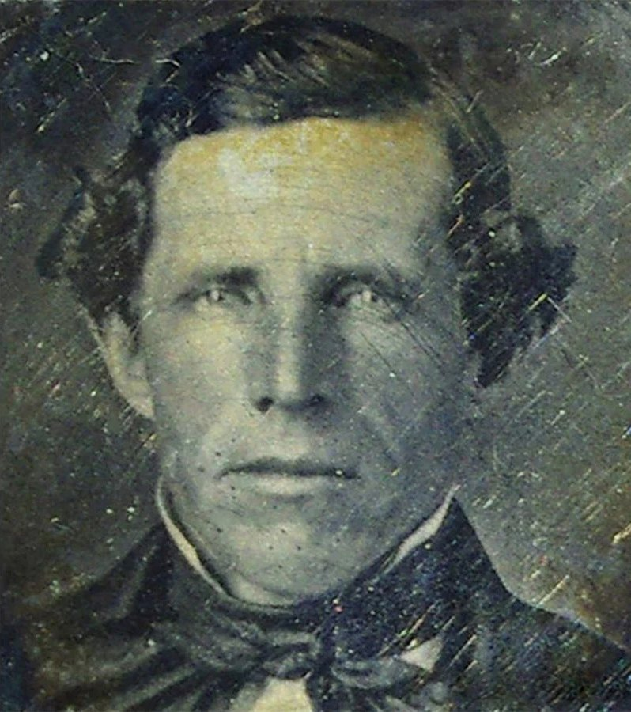
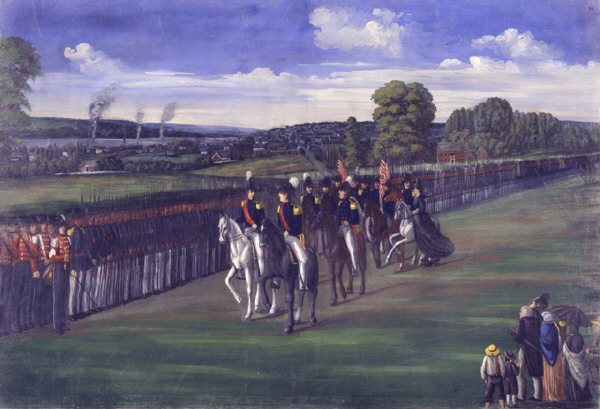
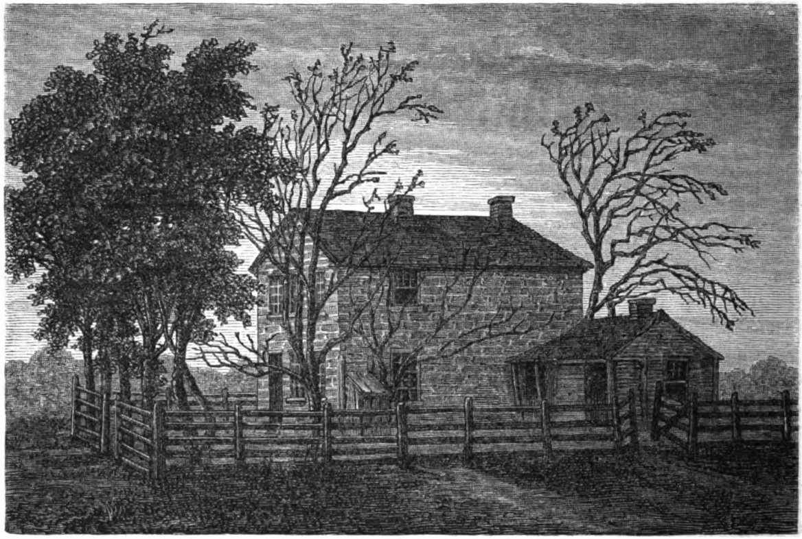
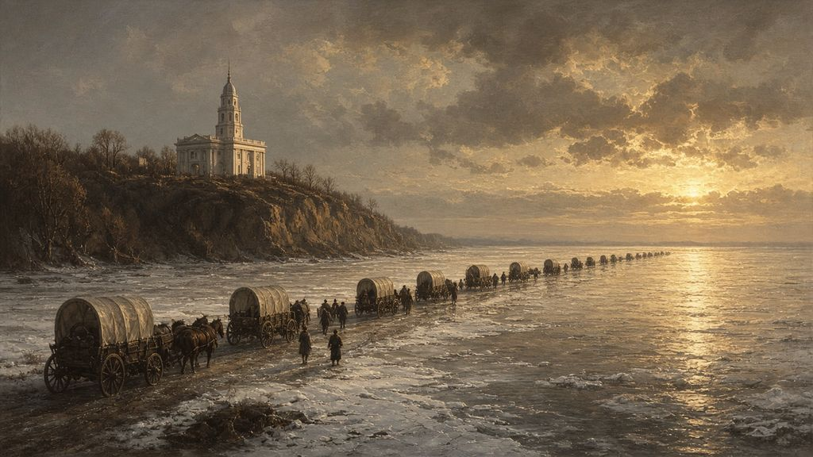
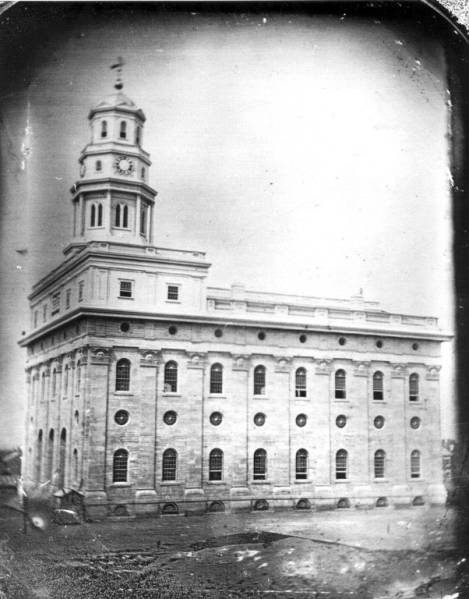

A Hymn Sung Twice
On the afternoon of June 27, 1844, four men waited in the jail at Carthage, Illinois. It was hot. They had taken off their coats and opened the windows. One of them sang a hymn about a poor stranger who turns out to be the Savior. When he finished, another asked him to sing it again.1
The man who asked was Hyrum Smith. Beside him sat his younger brother Joseph, who as a feverish boy in Lebanon had lain in pain while Hyrum sat beside him day and night, holding the diseased leg between his hands.
Before the day was out, both brothers would be dead. How they came to that room is the last part of Joseph’s story, and it began that spring, when he gave the keys away.
“Round Up Your Shoulders”
By the spring of 1844, Joseph seemed weighed down in his meetings with church leaders. He believed something important was about to happen. “It may be that my enemies will kill me,” he told the Twelve, “and in case they should, and the keys and power which rest on me not be imparted to you, they will be lost from the earth.”2

So he gave the keys away. He conferred on the Twelve Apostles every priesthood key they would need to carry on without him, including the sealing power that Elijah had restored in the Kirtland Temple eight years before. “Upon the shoulders of the Twelve must the responsibility of leading this church henceforth rest until you shall appoint others to succeed you,” he said. He warned them that the road would be hard. “If you are called to lay down your lives, die like men. After they have killed you, they can harm you no more. Should you have to walk right into danger and the jaws of death, fear no evil. Jesus Christ has died for you.”3
Then, Saints records, he said something that his apostles would repeat for the rest of their lives: “I roll the burden and responsibility of leading this church off from my shoulders and onto yours. Now round up your shoulders and stand under it like men, for the Lord is going to let me rest a while.” The heaviness lifted from him. “I feel as light as a cork—I feel that I am free,” he said. “I thank my God for this deliverance.”4
His father had promised him on his deathbed that he would live to lay out the plan of all the work God had given him. Now, it seemed, he had. Latter-day Saints see the Lord’s hand in the timing. The keys were safe on other shoulders before anyone rode to Carthage.
“What Kind of a Being Is God?”
On April 7, 1844, the second day of the church’s general conference, a strong wind blew through the congregation. “It will be hardly possible for me to make you all hear unless there is profound attention,” Joseph called out over the weather. He had been asked to speak about his friend King Follett, who had recently died in an accident, and he wanted to comfort everyone who had lost someone.5 No complete record of the sermon exists, but several people took notes, so it is one of his best-recorded discourses.6
“What kind of a being is God?” he asked. “Does any man or woman know? Have any of you seen Him, heard Him, communed with Him?” He taught that “if men do not comprehend the character of God they do not comprehend themselves,” and that God’s children have the capacity to grow, “from grace to grace,” until they become like Him.7 The sermon challenged a long Christian tradition that treated God as wholly different from humanity, and many Christians then and since have found it startling. For Latter-day Saints it opened a window on the purpose of everything Joseph had restored, from baptism to the temple.
He ended with comfort. “How consoling to the mourner,” he said, “to know that although the earthly tabernacle shall be dissolved, they shall rise in immortal glory, not to sorrow, suffer, or die anymore.” He spoke of family and friends who had died: “They are only absent for a moment. They are in the spirit, and when we depart we shall hail our mothers, fathers, friends, and all whom we love.” He promised mothers who had lost infants that they would have their children again.8
Saints gives a reflection on that day that is worth repeating. Joseph “was no longer the rough, unschooled farm boy who had sought wisdom in a grove of trees. Day by day, year by year, the Lord had polished him like a stone.”9
A Public Nuisance
The trouble that ended Joseph’s life began inside the church. William Law, a counselor in the First Presidency, had turned against plural marriage and against Joseph, and he had been removed from his office. Joseph heard that Law and several others were plotting to kill him and his family.10
On June 7, 1844, Law and the other dissenters published the first and only issue of a newspaper called the Nauvoo Expositor. It attacked plural marriage, Joseph’s teachings on the nature of God and his mixing of religious and civic power in Nauvoo, and it called on the county to “sweep the influence of tyrants and miscreants from the face of the land.”11 Many of the Saints’ neighbors were already hostile. Joseph feared the paper would bring the mobs. “It is not safe that such things should exist,” he told the city council, “on account of the mob spirit which they tend to produce.”12 Hyrum reminded the council of Missouri.
After two days of debate, the council declared the newspaper a public nuisance. On the evening of Monday, June 10, at Joseph’s order as mayor, the city marshal and about a hundred men removed the press, scattered the type and burned the remaining copies.13
The council believed it was acting legally. In 1844 the First Amendment restrained only the federal government, and Joseph cited legal authorities on public nuisances. Scholars have since concluded that the council could lawfully destroy copies of the paper but “may have exceeded its authority by destroying the press itself.”14 Whatever the law allowed, the decision was a serious mistake. The governor of Illinois, Thomas Ford, wrote to Joseph that it was “a very gross outrage upon the laws and the liberties of the people. It may have been full of libels, but this did not authorize you to destroy it.”15 In Warsaw, the editor Thomas Sharp called the county to arms. Within days, three hundred armed men had gathered in Carthage, the county seat.16
On June 18, in full uniform as commander of the Nauvoo Legion, Joseph spoke to the militia from a platform near his house. “I love you with all my heart,” he told them. “You have stood by me in the hour of trouble, and I am willing to sacrifice my life for your preservation.”17 It was his last public address.

“Like a Lamb to the Slaughter”
Governor Ford insisted that Joseph and the city council come to Carthage to answer a charge of riot. Joseph did not believe he would survive there. On the night of June 22, he said goodbye to his family and crossed the Mississippi into Iowa in a leaky skiff with Hyrum, Willard Richards and Porter Rockwell, bailing water with their boots. He sent a letter back to Emma: “Do not despair. If God opens a door that is possible for me, I will see you again.”18
The next morning messengers from Nauvoo brought letters, Emma’s among them, begging him to come back. The governor, they said, would occupy the city with troops until the brothers gave themselves up. Some of the men called Joseph a coward for leaving. “If my life is of no value to my friends, it is of none to myself,” he answered. He asked Hyrum what they should do. “Let us go back and give ourselves up, and see the thing out,” Hyrum said. “If you go back, I shall go with you,” Joseph said, “but we shall be butchered.” Hyrum answered, “If we live or have to die, we will be reconciled to our fate.”19
That evening Joseph gathered his children and blessed them. Early the next morning, June 24, he kissed each of them goodbye. “You are coming back,” Emma said through her tears.20 On the road he told the men riding with him, “I am going like a lamb to the slaughter; but I am calm as a summer’s morning; I have a conscience void of offense towards God, and towards all men.”21 At the top of the hill he stopped by the unfinished temple and looked out over the city in the early sunlight. “This is the loveliest place and the best people under the heavens,” he said. “Little do they know the trials that await them.”22
He came back once more that day, to make sure the Legion’s state-issued arms were surrendered peacefully. He asked Emma whether she would come with him, but she knew she had to stay with the children. She asked him for a blessing, and since there was no time, he asked her to write down the blessing she wanted so he could sign it when he returned. She wrote: “I desire with all my heart to honor and respect my husband.” She closed: “I desire that whatever may be my lot through life, I may be enabled to acknowledge the hand of God in all things.”23 He never signed it. He never came back.
Carthage
Joseph and Hyrum reached Carthage a little before midnight, to the sound of jeering. They were charged with riot and then with treason, and were held in the county jail to await trial.24 Governor Ford had promised them protection. On June 27 he left for Nauvoo, taking most of the troops with him and leaving only a small group of the Carthage Greys, a local militia company, to guard the jail.25

That day Emma received a letter in Willard Richards’s handwriting, to which Joseph had added a postscript in his own hand: “I am very much resigned to my lot, knowing I am justified and have done the best that could be done.” He sent his love to the children. “God bless you all,” he wrote.26
This was the afternoon that opens this chapter. To pass the time, John Taylor sang a hymn that had become popular with the Saints:
Then in a moment to my view, The stranger darted from disguise; The tokens in his hands I knew, My Savior stood before mine eyes.27
When he finished, Hyrum asked him to sing it again. Picture the late sun through those open windows, and two brothers who had shared everything since boyhood in Vermont, listening to the song twice.†
A little after five o’clock, the men heard shots and a rush of feet on the stairs. A mob of about a hundred men with faces blackened by mud and gunpowder had stormed the jail.28 Willard Richards later wrote down what followed in an account he titled “Two Minutes in Jail”: “Possibly the following events, occupied near three minutes, but I think about two.” A ball came through the door and struck Hyrum in the face. “As he struck the floor he exclaimed emphatically; ‘I’m a dead man.’ Joseph looked towards him, and responded, ‘O dear! Brother Hyrum!’”29 Joseph fired a six-shooter through the doorway, and John Taylor beat down the gun barrels with a cane until he was shot several times. He rolled under a bed. The ball that would have killed him struck his pocket watch.30
Then, Richards wrote, “Joseph attempted as the last resort to leap the same window from whence Mr. Taylor fell, when two balls pierced him from the door, and one entered his right breast from without, and he fell outward exclaiming, ‘O Lord my God!’” Richards leaned out the window as the balls whistled around him, “determined to see the end of him I loved.” Joseph lay on his left side beside a well and did not move.31
Richards himself was barely scratched. He dragged the wounded Taylor into the inner cell and covered him with a bed. “If your wounds are not fatal,” he told him, “I want you to live to tell the story.”32 John Taylor did live. Within months, a testimony generally attributed to him was added to the Doctrine and Covenants:
To seal the testimony of this book and the Book of Mormon, we announce the martyrdom of Joseph Smith the Prophet, and Hyrum Smith the Patriarch. They were shot in Carthage jail, on the 27th of June, 1844, about five o’clock p.m., by an armed mob—painted black—of from 150 to 200 persons.33
Joseph was thirty-eight years old. Hyrum was forty-four.34
“Why Am I a Widow?”
Before sunrise on June 28, Emma opened her door to her nephew, who was covered in dust from the road. Soon Porter Rockwell was riding through the streets of Nauvoo shouting the news. Emma, who was pregnant, sat alone for a long time. Then she buried her face in her hands and cried, “Why am I a widow and my children orphans?” When the city marshal tried to comfort her by saying her affliction would be a crown of life to her, she answered, “My husband was my crown.”35
That afternoon Willard Richards and Samuel Smith brought the bodies home in wagons, covered with brush against the summer sun. Nearly all of Nauvoo walked behind them past the temple and down to the Smiths’ house. About ten thousand people gathered. Many were angry, and some wanted revenge. Richards climbed the platform where Joseph had last spoken to the Legion. “Trust in the law for redress,” he pleaded. “Leave vengeance to the Lord.”36 The Saints did not retaliate.
Lucy Mack Smith had already buried her husband, her firstborn, Alvin, and her youngest son, Don Carlos, who died in 1841.37 She wrote about this day with the same plainness as all the others. “I had for a long time braced every nerve, roused every energy of my soul, and called upon God to strengthen me; but when I entered the room, and saw my murdered sons, extended both at once before my eyes; and heard the sobs and groans of my family— the cries of ‘Father! Husband! Brothers!’ from the lips of their wives, children, brother and sisters, it was too much— I sunk back crying to the Lord in the agony of my soul, My God! My God! Why hast thou forsaken this family? A voice replied, I have taken them to myself that they might have rest.”38
Eleven-year-old Joseph III knelt by his father’s body, laid his cheek against his father’s and kissed him. “Oh, my father! my father!!” he cried.39 As Lucy looked at her sons’ faces, she wrote, she “seemed to almost hear them say: mother, weep not for us; we have overcome the world by love; we carried to them the gospel, that their souls might be saved— they slew us for our testimony, and thus placed us beyond their power— their ascendancy is for a moment— ours is an eternal triumph.” She remembered the promise she had received in Missouri, when her sons had been carried off in a covered wagon, that within five years Joseph would have power over all his enemies. “The time had elapsed,” she wrote, “and the promise was fulfilled.”40
There was one more grief. Samuel had been chased for more than two hours by the mob as he rode toward Carthage. “Mother,” he told her soon after the funeral, “I have had a dreadful distress in my side ever since I was chased by the mob, and I think I have received some injury which is going to make me sick.” He lingered until July 30, when, in Lucy’s words, “his spirit forsook its earthly tabernacle, and went to join his brothers, and the ancient martyrs in the Paradise of God.”41 Samuel had been one of the church’s first missionaries, carrying a knapsack of Books of Mormon from town to town. Of the Smith sons who had grown to manhood, only William was still living.
The Work Rolls On
The newspapers expected the church to fall apart. The New York Herald predicted that Joseph’s death would “seal the fate of Mormonism. They cannot get another Joe Smith.”42 They were half right. There would never be another Joseph Smith. But Joseph had already rolled the burden onto other shoulders. Brigham Young, who was away in the East when the news came, later said his head felt as if it would crack, until the thought came to him that the keys of the kingdom remained with the Apostles.43 “The death of one or a dozen,” he taught, “could not destroy the priesthood, nor hinder the work of the Lord from spreading throughout all nations.”44 He and four other apostles reached Nauvoo on August 6, 1844. Two days later, at a meeting in a grove below the temple, the Saints voted overwhelmingly to sustain the Twelve as the church’s leaders. Many who were there said it seemed as if Joseph’s mantle had fallen on Brigham.45 Not everyone followed. Over the next few years Sidney Rigdon, James J. Strang and others started movements of their own, and each drew some members away. Most of the Saints, though, stayed with the Twelve and kept building the temple.

The Saints went back to work on the temple. They had little money, the mobs were again threatening them, and before long they knew they would have to leave Illinois. Brigham prayed about what to do and felt the answer was simple: stay and finish the temple.46 By December 1845 the attic was ready. With curtains, plants, paintings and a marble clock, the apostles turned it into rooms for the endowment, the ordinance Joseph had first given to a few in the room above his store. That winter the Saints came in the thousands. By early February 1846 more than six thousand had received the endowment in the house Joseph had promised would be “as great a temple as ever Solomon did.”47
On February 4, 1846, the first wagons rolled out of Nauvoo toward the West. That same day, five hundred more Saints received their endowment before they left.48 Then they ferried their wagons across the Mississippi, the same river Emma had crossed on the ice seven years before. In May the temple was formally dedicated, though most of those who built it had already gone.49 They took with them the keys Joseph had given the Twelve, the ordinances he had restored, and the promise, sealed in a temple, that families need not end at a grave.

Come and See
The story of this book began with a famine, not of bread, “nor a thirst for water, but of hearing the words of the LORD,”50 and with a boy who read a single verse in James and believed it. It ends twenty-four years after that spring morning in the grove, in a jail at Carthage. In that short span, as Joseph’s friends wrote in his memorial, he brought forth the Book of Mormon, sent the gospel “to the four quarters of the earth,” gathered “many thousands” of Latter-day Saints and “founded a great city.”51
Latter-day Saints have never believed it ended there. The ninth article of faith, the one Joseph wrote for John Wentworth, makes a promise that is still open: “We believe all that God has revealed, all that he does now reveal, and we believe that he will yet reveal many great and important things pertaining to the kingdom of God.”52 The restoration was not a finished event in 1844. It was a beginning. The keys passed to the Twelve did not stop with them. Today the Church counts its temples, its members and its missionaries by numbers Joseph’s first followers could hardly have imagined, and it still speaks of the restoration as ongoing.
For Jewish readers who have come this far, one thread of the story deserves a last word. Malachi, the last of the prophets in the Christian Old Testament, promised that Elijah would come “before the coming of the great and dreadful day of the LORD,” to “turn the heart of the fathers to the children, and the heart of the children to their fathers.”53 Every Passover, Jewish families still pour a cup for Elijah and open the door. Joseph Smith testified that on a Passover weekend in 1836, Elijah came to a temple in Ohio. Latter-day Saints believe that. They do not believe it closes the door any Jewish family opens at the Seder. If anything, the turning of hearts that Malachi foretold is something both peoples are still waiting to see completed. The hearts of fathers and children are still turning, in temples, at Seder tables, and wherever a family remembers its dead with love.
When Nathanael doubted that anything good could come out of Nazareth, Philip did not argue with him. He said only, “Come and see.”54 That has always been the invitation of the restoration: not a demand but an invitation to read the book, to ask God as a fourteen-year-old boy once did, and to judge the fruit. Joseph’s own story ended in Carthage. The work he began did not. The first chapter of this book began with a promise the Lord made to Abraham: “my hand shall be over thee.”55 Latter-day Saints believe that hand was over a cold cell in Vilvoorde, a sickroom in Randolph, a grove in New York and a jail in Carthage, and that it has not been lifted since. In the words of the psalm, weeping may endure for a night, “but joy cometh in the morning.”56
Come and see.
Key: † marks imagined connective detail. Full citations and verification status are in 12-sources.md. Lucy Mack Smith is quoted from her 1845 history (JSP fair copy). Willard Richards is quoted from “Two Minutes in Jail,” Times and Seasons, 1 Aug. 1844.
Notes
-
Saints, vol. 1, ch. 44; told in full, with the stanza, later in this chapter, in the section “Carthage.” The brothers’ boyhood bond, including Hyrum holding Joseph’s diseased leg “for days and nights,” is in Lucy Mack Smith, History, 1845 (see Ch. 4, note 14). ↩
-
Saints, vol. 1, ch. 42. ↩
-
Saints, vol. 1, ch. 42. ↩
-
Saints, vol. 1, ch. 42; compare CHT, “Succession of Church Leadership” (“I roll the burthen and responsibility of leading this church off from my shoulders on to yours”), which notes these words come from later testimonies of several apostles. ↩
-
Saints, vol. 1, ch. 43; CHT, “King Follett Discourse.” ↩
-
CHT, “King Follett Discourse.” ↩
-
Saints, vol. 1, ch. 43; CHT, “King Follett Discourse.” ↩
-
Saints, vol. 1, ch. 43. ↩
-
Saints, vol. 1, ch. 43. ↩
-
Saints, vol. 1, ch. 43. ↩
-
CHT, “Nauvoo Expositor”; Saints, vol. 1, ch. 43. ↩
-
Saints, vol. 1, ch. 43. ↩
-
CHT, “Nauvoo Expositor.” ↩
-
CHT, “Nauvoo Expositor.” ↩
-
Thomas Ford to Joseph Smith, June 1844, as quoted in Saints, vol. 1, ch. 44. ↩
-
Saints, vol. 1, ch. 44; CHT, “Nauvoo Expositor.” ↩
-
Saints, vol. 1, ch. 44. ↩
-
Saints, vol. 1, ch. 44. ↩
-
Saints, vol. 1, ch. 44. ↩
-
Saints, vol. 1, ch. 44. ↩
-
Doctrine and Covenants 135:4; see also Saints, vol. 1, ch. 44. ↩
-
Saints, vol. 1, ch. 44. ↩
-
Emma Smith, blessing, June 1844, as quoted in Saints, vol. 1, ch. 44. ↩
-
Saints, vol. 1, ch. 44; CHT, “Deaths of Joseph and Hyrum Smith.” See
12-sources.md. ↩ -
Saints, vol. 1, ch. 44. ↩
-
Saints, vol. 1, ch. 44. ↩
-
“A Poor Wayfaring Man of Grief,” stanza as quoted in Saints, vol. 1, ch. 44. ↩
-
Saints, vol. 1, ch. 44. ↩
-
Willard Richards, “Two Minutes in Jail,” Times and Seasons 5, no. 14 (1 Aug. 1844): 597–98. ↩
-
Richards, “Two Minutes in Jail,” 598; Saints, vol. 1, ch. 44. See
12-sources.mdon the watch. ↩ -
Richards, “Two Minutes in Jail,” 598. ↩
-
Richards, “Two Minutes in Jail,” 598; Saints, vol. 1, ch. 45. ↩
-
Doctrine and Covenants 135:1. On authorship, see
12-sources.md. ↩ -
Doctrine and Covenants 135:6. ↩
-
Saints, vol. 1, ch. 45. ↩
-
Saints, vol. 1, ch. 45. ↩
-
Lucy Mack Smith, History, 1845, 303–4, 330. ↩
-
Lucy Mack Smith, History, 1845, 312–13, JSP, https://www.josephsmithpapers.org/paper-summary/lucy-mack-smith-history-1845/321. Quotation marks around the family’s cries have been completed; Lucy opens but does not close them. ↩
-
Lucy Mack Smith, History, 1845, 313, JSP, https://www.josephsmithpapers.org/paper-summary/lucy-mack-smith-history-1845/322. ↩
-
Lucy Mack Smith, History, 1845, 313; see Ch. 10 and Lucy, 281. ↩
-
Lucy Mack Smith, History, 1845, 313–14, JSP. ↩
-
CHT, “Succession of Church Leadership.” ↩
-
CHT, “Succession of Church Leadership.” ↩
-
CHT, “Succession of Church Leadership.” ↩
-
CHT, “Succession of Church Leadership.” See
12-sources.md. ↩ -
Saints, vol. 1, ch. 46. ↩
-
Saints, vol. 1, ch. 46; CHT, “Nauvoo Temple.” ↩
-
Saints, vol. 1, ch. 46. ↩
-
CHT, “Nauvoo Temple” (dedicated May 1, 1846). ↩
-
Amos 8:11 (KJV). See Ch. 1. ↩
-
Doctrine and Covenants 135:3. ↩
-
Articles of Faith 1:9; “Church History,” 1 March 1842, 709–10, JSP. ↩
-
Malachi 4:5–6 (KJV). ↩
-
John 1:46 (KJV). ↩
-
Abraham 2:8 (Pearl of Great Price); see Chapter 1, note 6, and Robert D. Hales, “Preparations for the Restoration and the Second Coming: ‘My Hand Shall Be over Thee,’” October 2005 general conference. ↩
-
Psalm 30:5 (KJV). ↩